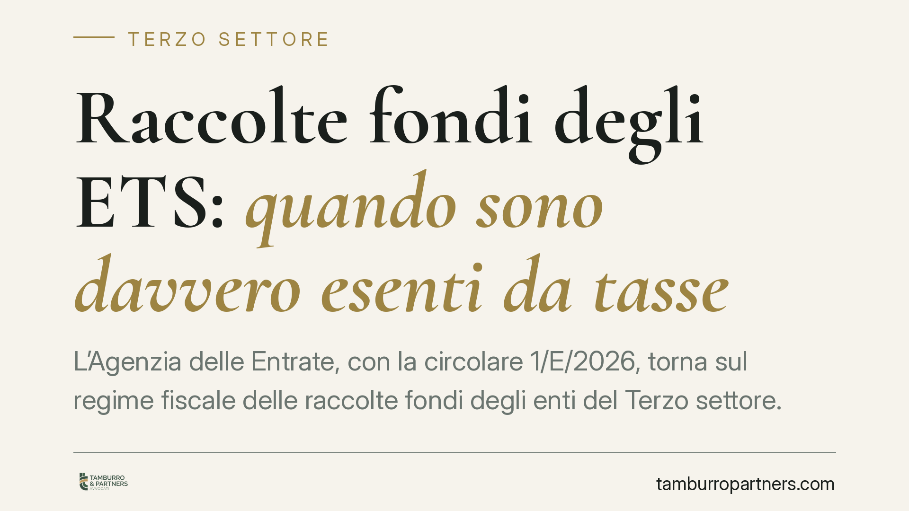

Raccolte fondi degli ETS: quando sono davvero esenti da tasse
L'Agenzia delle Entrate, con la circolare 1/E/2026, torna sul regime fiscale delle raccolte fondi degli enti del Terzo settore. Non basta la natura non profit per invocare l'esenzione: servono occasionalità, apertura al pubblico e collegamento a ricorrenze. Fuori da questi confini, la raccolta con corrispettivo è reddito d'impresa tassabile. Un confine sottile che conviene conoscere prima di organizzare l'iniziativa.

Il punto della questione
Molti enti danno per scontato che ogni raccolta fondi sia automaticamente esente da imposte. Non è così. La qualifica di ente del Terzo settore (ETS) non neutralizza di per sé la rilevanza fiscale di un'attività: conta come l'iniziativa è strutturata.
La circolare 1/E/2026 dell'Agenzia delle Entrate interviene proprio su questo equivoco, distinguendo tra le raccolte fondi "decommercializzate" - cioè escluse dal reddito imponibile - e quelle che, pur promosse da un ente non profit, restano tassabili come reddito d'impresa.
Inquadramento normativo
Il riferimento è l'art. 7 del D.lgs. 117/2017 (Codice del Terzo settore), che disciplina le raccolte fondi come attività con cui gli ETS, anche in forma organizzata e continuativa, promuovono la raccolta di denaro o beni per finanziare le proprie attività di interesse generale.
La chiave fiscale è però nell'art. 79, comma 4, lettera a), del medesimo Codice, che esclude dal reddito d'impresa i fondi raccolti - anche mediante offerta di beni o servizi di modico valore - in occasione di celebrazioni, ricorrenze o campagne di sensibilizzazione. La norma richiede che la raccolta sia occasionale, rivolta al pubblico e collegata a una ricorrenza o campagna determinata.
La circolare 1/E/2026 precisa che questi tre elementi devono coesistere. Manca uno di essi, e l'operazione esce dal perimetro della decommercializzazione. In particolare, l'Agenzia chiarisce che la raccolta continuativa a fronte di un corrispettivo specifico - cioè una controprestazione richiesta a chi versa - assume natura commerciale e genera reddito d'impresa, soggetto a tassazione ordinaria.
Cosa cambia per gli enti
Il discrimine è tra erogazione liberale e scambio economico. Quando il sostenitore riceve un bene o un servizio di modico valore "in occasione" di una campagna, siamo ancora nell'area esente. Quando invece la cessione del bene è la causa reale del versamento - il donatore paga perché vuole quel prodotto, a un prezzo di fatto fissato - l'operazione diventa una vendita.
Il requisito dell'occasionalità è il più insidioso. Una vendita di beni organizzata in modo stabile, ripetuta nel tempo con modalità imprenditoriali, non è "occasionale" solo perché l'ente la chiama raccolta fondi. L'Agenzia guarda alla sostanza: frequenza, organizzazione di mezzi, presenza di un listino.
Attenzione anche agli obblighi documentali. L'art. 7 richiede la redazione, entro quattro mesi dalla chiusura dell'esercizio, di un rendiconto specifico e separato per ciascuna raccolta, con relazione illustrativa. È un adempimento che non va trascurato: la sua assenza indebolisce la stessa qualificazione dell'attività come raccolta fondi esente.
Per gli ETS non commerciali, infine, resta rilevante il peso complessivo delle attività commerciali svolte. Un'eccessiva componente commerciale può incidere sulla qualifica fiscale dell'ente nel suo insieme, con conseguenze ben più ampie della singola iniziativa.
Cosa fare in concreto
- Verifica i tre requisiti prima di avviare l'iniziativa: occasionalità, destinazione al pubblico, collegamento a una ricorrenza o campagna identificabile.
- Distingui liberalità da vendita: se chiedi un corrispettivo per un bene o servizio, valuta se l'operazione è una cessione commerciale e, in caso, gestiscila nel regime fiscale corretto.
- Limita la continuità: evita di trasformare la raccolta in un'attività stabile e ripetitiva con caratteri imprenditoriali; in quel caso inquadrala correttamente come attività commerciale.
- Predisponi il rendiconto separato per ogni raccolta entro quattro mesi dalla chiusura dell'esercizio, con relazione illustrativa, come richiede l'art. 7.
- Monitora il peso complessivo delle attività commerciali rispetto a quelle di interesse generale, per non compromettere la qualifica di ente non commerciale.
La decommercializzazione è un'opportunità concreta, ma non un automatismo. Chi struttura le raccolte fondi con attenzione ai requisiti normativi mette al riparo l'iniziativa - e l'ente - da contestazioni successive. Consigliamo di documentare fin dall'inizio la natura dell'operazione, perché è in sede di verifica che la sostanza conta più della denominazione.
---
*Contributo informativo a cura di Tamburro & Partners - Avv. Giuseppe Tamburro. Non costituisce parere legale.*
Ogni ente del terzo settore ha la sua storia.
Se rappresenti un ETS e vuoi un confronto su governance, RUNTS o fiscalità, scrivi allo studio. Ti rispondiamo entro un giorno lavorativo.